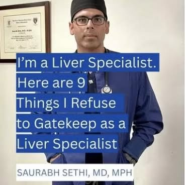

This post is true. Coffee is by far the most extensively studied beverage for liver protection.
Many hepatologists now explicitly tell their patients to drink coffee.
Louis endorses a post stating coffee is associated with lower rates of fatty liver, cirrhosis and liver-related death, and says many hepatologists now tell patients to drink it.
This post is true. Coffee is by far the most extensively studied beverage for liver protection.
Many hepatologists now explicitly tell their patients to drink coffee.
Coffee stands out as the most extensively researched beverage for liver protection, with decades of studies pointing to consistent benefits. Large population analyses show that drinking coffee regularly is associated with significantly lower rates of liver disease, including fatty liver, cirrhosis, and liver-related death. The protective effect appears across different populations, lifestyles, and even among people with existing liver stress, making coffee unique in nutritional research.
The numbers are especially striking. Data show that consuming around three cups of coffee per day is linked to a 46 percent reduction in overall mortality risk related to liver disease. Drinking four or more cups daily is associated with an even greater reduction, reaching up to 71 percent. These benefits are believed to come from coffee’s bioactive compounds, including polyphenols and diterpenes, which help reduce inflammation, limit oxidative damage, and support liver enzyme regulation. Caffeine itself may also play a role by improving fat metabolism in the liver.
What makes coffee’s impact notable is that benefits appear with regular, consistent intake rather than extreme amounts. Filtered or black coffee tends to show the strongest associations, without the added sugars and creams that can counteract benefits. While coffee is not a cure, evidence strongly suggests it supports liver resilience. Simple daily habits, repeated over time, can quietly shape long-term health in powerful ways.
#NutraFacts #fblifestyle #Coffee #Liver #Longevity

Louis notes evidence including randomized trials shows prunes protect against bone loss; the shared summary says 50 g a day preserved hip bone mineral density.

Louis shares University of New Mexico research that oxalic acid in foods like chocolate, spinach and vitamin C can form gadolinium nanoparticles in tissues, and suggests avoiding such foods before contrast MRI.

Louis shares claims that coffee diterpenes (kahweol, cafestol) activate PPAR-gamma in hepatic stellate cells, breaking down scar tissue. His note links PPAR-gamma activation to coffee's apparent benefits for insulin resistance and diabetes.

Louis shares a Medscape item saying bioactive compounds in coffee reduce the incidence and progression of liver disease.

Louis states that many studies link coffee with lower risk of cirrhosis and liver cancer and that coffee likely protects the liver. No specific study is cited.
Louis dismisses fears about mold toxins in coffee. The shared text says over 95% of tested samples are far below safety limits, roasting removes 70-90% of ochratoxin A and brewing removes more, and regular coffee drinking correlates with benefits.